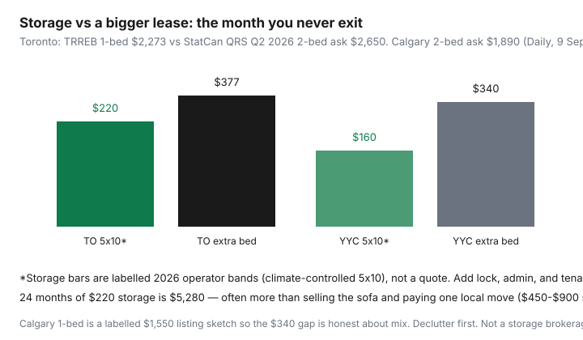

Housing · Canada
Self-storage vs renting a bigger place in Canada: the break-even most people miss
Households keep a locker “until we know” and then pay it like a second rent. The break-even most people miss is not locker vs extra bedroom in month one. It is locker × the number of months you will actually stay subscribed, plus the van, plus the fact that clutter expands to fill any box you pay for.
Toronto gap, labelled on purpose from two official prints: Statistics Canada QRS Q2 2026 asking two-bedroom $2,650 (Daily, 9 Sep 2026) minus TRREB Q2 2026 GTA condo one-bedroom $2,273 = $377. Calgary QRS asking two-bedroom $1,890; we pair that with a labelled $1,550 one-bed listing sketch for a $340 gap. Do not paste either gap onto your two quotes without replacing both sides.
Disclosure: Storage-facility deals and furniture-outlet offers are offer types. Saving Optimizer may earn a commission if we later add partner links. We do not currently claim StorageMart, U-Haul, or retailer partnerships. This is not a brokerage for lockers.
Key takeaways
- Monthly test: storage + transport vs incremental rent. Toronto labelled gap $377 vs locker $220.
- 24 × $220 = $5,280. That often beats “we’ll deal with it later.”
- Climate control, access hours, and insurance riders are first-class lines.
- Declutter first. A sold sofa does not need a locker or a second bedroom.
- Write an exit month on the day you sign. Auto-pay without a date is a subscription.
Monthly storage + transport vs incremental rent
| City sketch | Locker + insurance rider | Extra bedroom | Month-1 winner |
|---|---|---|---|
| Toronto | $220 + $15 | $377 | Storage by $142 |
| Calgary | $160 + $12 | $340 | Storage by $168 |
Add a cargo-van Saturday every other month ($80–$200/day plus kilometres on published rental menus — check the contract) and the Toronto “win” shrinks. If you need the hockey bag weekly, you did not store seasonal gear. You rented a very far closet.

How long “temporary” storage usually lasts
People say three months. Calendars say a year. At $235 all-in, 12 months is $2,820; 24 is $5,640. A local studio/1-bed move often sits in the $450–$900 public 2026 band; a 2-bed $800–$1,500 (see DIY vs movers). If the locker is holding furniture you could sell on Marketplace for $800 and replace later, you are financing nostalgia at 12% of a cheap sofa every year.
Climate-controlled premiums and access fees
Climate control is the upsell that is sometimes rational (wood, vinyl, photos) and sometimes a $40/month habit. After-hours access, elevator bookings at the facility, and “administrative” setup fees belong on the same sheet as rent. Ask whether the quoted rate is a 3-month promo. Promotional $99 lockers that revert to $189 are how people stop looking at the statement.
Declutter-first alternative that shrinks both options
Run the room-by-room audit before you tour either a 2-bed or a locker. Sell/donate thresholds: if replacement cost minus selling fees is less than 6 months of storage, sell. Kids’ art and tax boxes get a plastic bin in the unit, not a 10×10. What remains should fit a 5×5 or a friend’s garage for one season.
When storage enables a cheaper neighbourhood win
A 1-bed downtown or inner-city walkable unit can beat a 2-bed in a far suburb on transit, time, and total shelter even after a $220 locker — if the locker has an end date and the furniture you stored is going to be sold or fits the next place. That is a bridge. It is not a lifestyle. If the cheaper neighbourhood also needs a car you do not own, run the Transportation math separately; do not hide a Civic inside a locker comparison.
Worked examples for Toronto and Calgary
Toronto. Keep the $2,273 1-bed. Store a dining table and off-season clothes at $235. Month-1 save vs a $2,650 2-bed: $142 before last-month rent and movers on the upgrade. If you exit storage in month 6 after selling the table, total locker spend ≈ $1,410. If you stay 30 months, you have paid $7,050 to avoid a hard conversation about the table.
Calgary. Asking 2-bed $1,890 (StatCan QRS Q2 2026). Labelled 1-bed $1,550. Gap $340 vs locker $172. Same shape, cheaper city. Calgary’s asking-vs-paid quirk (asking $1,890, paid $1,930 in Q2 2026) is a reminder that sitting tenants and new leases are different markets — your increment is the two units you can actually rent this month.
Exit plan so storage does not become permanent rent
- Inventory photo on day one. If you cannot name it, it is not stored — it is buried.
- Sale or donate date for every large piece (day 60 / 90 / 120).
- Calendar hold to cancel auto-pay. Facilities count on inertia.
- A “no new inbound boxes” rule. Storage is not an annex of Amazon.
- If month 6 still looks like month 1, book the mover scorecard or the donate truck — not another year.
Sources & date stamps
- Statistics Canada, Quarterly rent statistics, Q2 2026 (Daily, 9 Sep 2026) — Toronto asking 2-bed $2,650; Calgary asking $1,890 / paid $1,930.
- TRREB Condo Market Report, Q2 2026 — GTA one-bedroom $2,273.
- Saving Optimizer DIY vs movers page — 2026 local studio/1-bed $450–$900; 2-bed $800–$1,500 public bands.
Frequently asked questions
When is self-storage cheaper than a bigger Canadian apartment?
When the extra bedroom costs more than storage plus transport and you have a dated exit. Toronto’s labelled gap is $377 (StatCan Q2 2026 asking 2-bed $2,650 minus TRREB Q2 2026 1-bed $2,273). A climate-controlled 5×10 often sits near $220 in 2026 operator bands. Storage wins the month; it loses if “temporary” becomes year three.
How long does temporary storage usually last?
Personal Finance Canada threads and mover explainers keep rediscovering 12–24 months. At $220, 24 months is $5,280 — in the same neighbourhood as a local 2-bed move band ($800–$1,500) plus a serious declutter. Put a sale date on the calendar in month one.
What fees sit on top of the locker rent?
Admin setup, lock, tenant-insurance or facility insurance riders, climate-control premiums, after-hours access, and the van you rent every time you need the ski bag. Those trips are why storage that “saves $157 a month” still eats Saturdays.
When does storage enable a cheaper neighbourhood?
When a smaller unit in a better-located building is $300–$500 cheaper than a larger unit farther out, and the locker is a bridge while you sell bulky furniture. That only works with a 90-day sell list.
Is this a storage brokerage?
No. Educational break-even math. Storage-facility deals and furniture outlets are offer types only. Compare written monthly rates yourself.